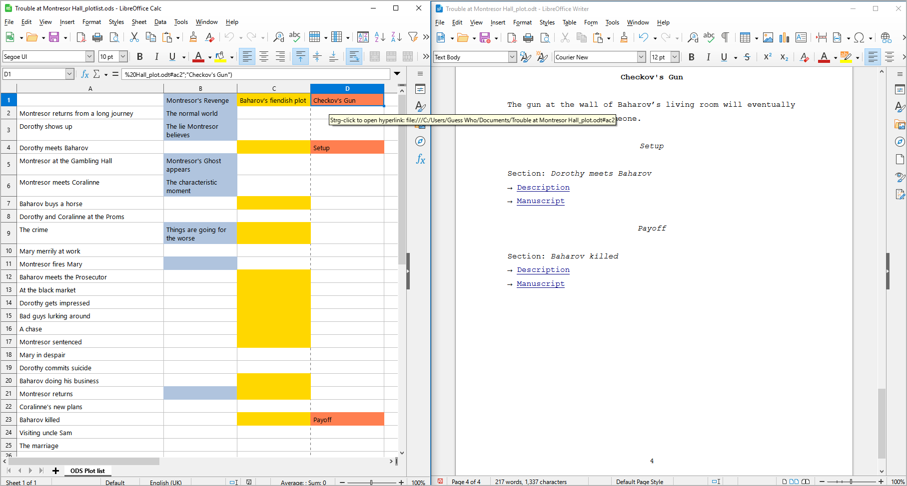

Plot menu
Plot elements operation
Add Plot line
Add a new plot line to the story
With Plot > Add plot line, you can add a project note to the tree.
If a plot line is selected, the new plot line is placed after the selected one.
Otherwise, the new plot line is placed at the last position.
The new plot line has an auto-generated title. You can change it in the right pane.
Add Plot point
Add a new Plot point to the selected plot line
With Plot > Add Plot point, you can add a plot point to a plot line.
If a plot point is selected, the new plot point is placed after the selected one.
If a plot line is selected, the new plot point is placed at the last position.
Otherwise, no new plot point is generated.
The new plot point has an auto-generated title. You can change it in the right pane.
Insert Stage
Insert a stage between the sections
With Plot > Insert Stage, you can insert a stage after the selected chapter or section.
Hint
By default, the new stage is on the second level. You can change the level to first (see below).
Change Level
Change the level of the selected stages
With Plot > Change Level, you can change the level of the selected stages.
1st Level is displayed in bold face.
2nd Level is displayed in regular font.
Note
The stage level is only for visual distinction. It has no influence on the program functions.
Import plot lines
Import plot lines with plot points from another project
With Plot > Import plot lines, you can import a selection of plot lines from another project. First you select an XML file containing the plot lines. Then you select the plot lines you want to add to the current project.
Hint
To create an XML plot lines file for the current project, use Export > XML data files.
Export plot grid for editing
Export an ODS document that can be imported again after editing
With Plot > Export plot grid for editing, you can create a spreadsheet as described in the Plotting with novelibre chapter, with a row per section, containing the following data:
The sequential section number as a hyperlink to the section in the manuscript (if any)
Story date
Story time
Day
Duration (<days>d <hours>h <minutes>min)
Section title
Section description
Viewpoint character
One column per plot line with the section’s plot line notes
Tags
Scene
Goal/Reaction/(custom)
Conflict/Dilemma/(custom)
Outcome/Decision/(custom)
Section notes
The plot line titles are linked to the plot line descriptions (see below).
Note
Only “normal” sections appear in the plot grid. Sections of the “Unused” type are omitted.
The document can be edited with Calc and reimported.
File name suffix is _grid_tmp.
Clicking on a section number with
Ctrlpressed, you can jump to the corresponding section in the manuscript.Clicking on a plot line title in the headline with
Ctrlpressed, you can jump to the corresponding plot line description, if any (see below).
Note
You can reorder, hide or delete columns and rows without affecting the reimport. Only the first column and the first row, which are hidden by default, must not be changed as they contain the structural information for the import.
Export story structure description for editing
Export an ODT document that can be imported again after editing
With Plot > Export story structure description for editing,
you can create a text document that contains
all stages, each with description.
File name suffix is _structure_tmp.
Hint
This is also a full synopsis, with the emphasis on the dramaturgical structure.
Export plot line descriptions for editing
Export an ODT document that can be imported again after editing
With Plot > Export plot Export plot line descriptions for editing,
you can create a text document that contains
stages, plot lines, and plot points, each with description.
The plot points are linked to the manuscript and to the section descriptions.
File name suffix is _plotlines_tmp.
Plot table (export only)
Export an ODS document
With Plot > Plot table (export only),
you can create a spreadsheet with a row per section
and a column per plot line.
Associations between plot lines and sections are color-highlighted.
Plot point titles are displayed.
File name suffix is _plotlist.
Hint
The plot line titles and the section titles are hyperlinked to the respective descriptions in other exported documents, if any.
The following picture shows a LibreOffice screenshot. Note the hyperlink from the plot line title in the plot table (left) to the plot line in the plot description (right).
Important
Hyperlinks in ODS spreadsheets are absolute within the file system, so they might not work after moving the location of your project file to another folder or computer. In this case, you will have to export the spreadsheet anew.
Show Plot table in browser
Show an HTML report with plot elements
With Plot > Show Plot table in browser, You can create a HTML file that contains a plot table similar to the ODS plot table (see above), but without any hyperlinks, and launch your system’s web browser for displaying it.

Note
The report is a temporary file, auto-deleted on program exit. If needed, you can have your web browser save or print it.